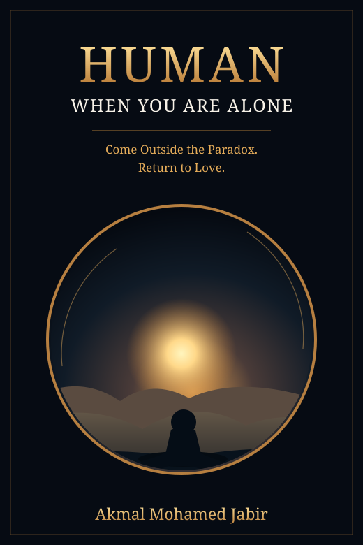

Akmal Mohamed Jabir
Page 1
Your reading position is saved here.
Listen uses the speech voice available on your device. Some mobile browsers stop speech when the screen locks.

Come Outside the Paradox. Return to Love.
Akmal Mohamed Jabir
English Reader Review 1.6 · 27 chapters
Your reading position is saved here.
Listen uses the speech voice available on your device. Some mobile browsers stop speech when the screen locks.